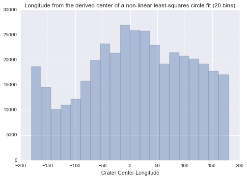
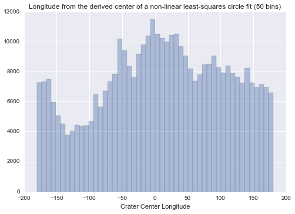
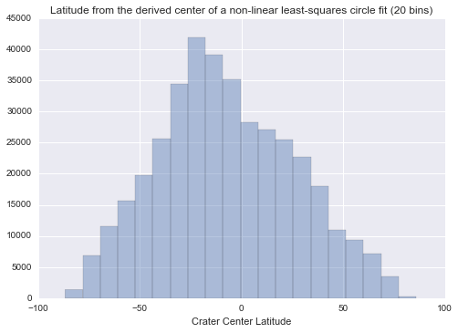
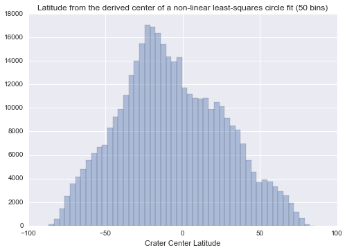
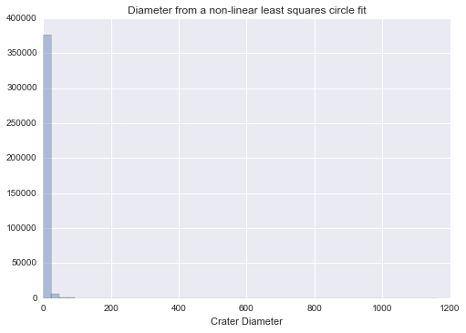
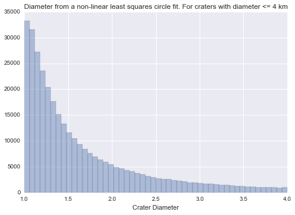
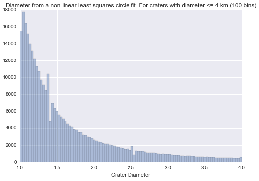
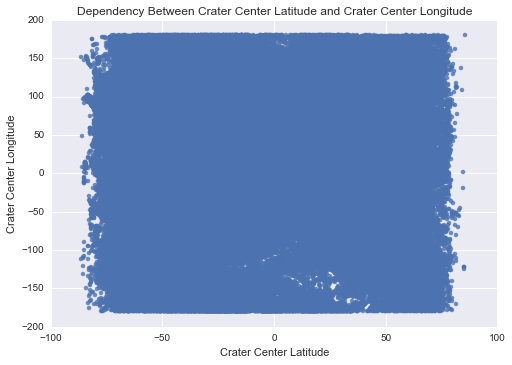
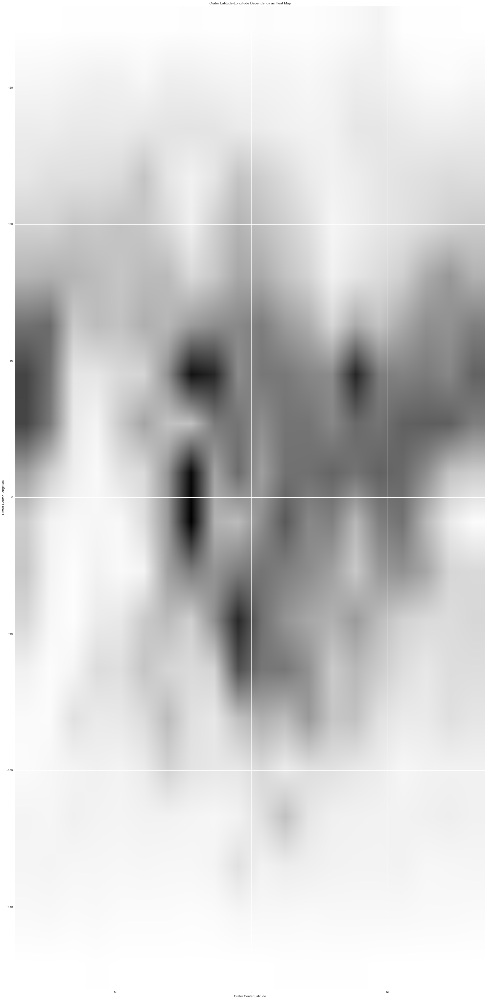

Python 3.4.3 |Anaconda 2.3.0 (64-bit)| (default, Mar 6 2015, 12:06:10) [MSC v.1600 64 bit (AMD64)]
Type "copyright", "credits" or "license" for more information.
IPython 3.2.0 -- An enhanced Interactive Python.
Anaconda is brought to you by Continuum Analytics.
Please check out: http://continuum.io/thanks and https://anaconda.org
? -> Introduction and overview of IPython's features.
%quickref -> Quick reference.
help -> Python's own help system.
object? -> Details about 'object', use 'object??' for extra details.
%guiref -> A brief reference about the graphical user interface.
In [1]: import pandas;
...: import numpy as np
...: import seaborn as sns
...: import matplotlib.pyplot as plt
...:
...:
...: data = pandas.read_csv('../codebooks/marscrater_pds.csv', low_memory=False)
...:
...: # Convert variables to numeric
...: data['LONGITUDE_CIRCLE_IMAGE'] = data['LONGITUDE_CIRCLE_IMAGE'].convert_objects(convert_numeric=True)
...: data['LATITUDE_CIRCLE_IMAGE'] = data['LATITUDE_CIRCLE_IMAGE'].convert_objects(convert_numeric=True)
...: data['DIAM_CIRCLE_IMAGE'] = data['DIAM_CIRCLE_IMAGE'].convert_objects(convert_numeric=True)
...:
...: # ---------- LONGITUDE_CIRCLE_IMAGE ---------
...: print('Describe LONGITUDE_CIRCLE_IMAGE:')
...: desc1 = data['LONGITUDE_CIRCLE_IMAGE'].describe()
...: print(desc1)
...:
...:
Describe LONGITUDE_CIRCLE_IMAGE:
count 384343.000000
mean 10.128021
std 96.641592
min -179.997000
25% -58.829000
50% 12.740000
75% 89.275500
max 179.997000
Name: LONGITUDE_CIRCLE_IMAGE, dtype: float64
In [2]: sns.distplot(data['LONGITUDE_CIRCLE_IMAGE'], bins=20, kde=False, rug=False);
...: plt.xlabel('Crater Center Longitude')
...: plt.title('Longitude from the derived center of a non-linear least-squares circle fit (20 bins)')
...:
Out[2]: <matplotlib.text.Text at 0xaf5cba8>

In [3]: sns.distplot(data['LONGITUDE_CIRCLE_IMAGE'], bins=50, kde=False, rug=False);
...: plt.xlabel('Crater Center Longitude')
...: plt.title('Longitude from the derived center of a non-linear least-squares circle fit (50 bins)')
...:
Out[3]: <matplotlib.text.Text at 0xb279390>

In [4]: print('Describe LATITUDE_CIRCLE_IMAGE:')
...: desc1 = data['LATITUDE_CIRCLE_IMAGE'].describe()
...: print(desc1)
...:
Describe LATITUDE_CIRCLE_IMAGE:
count 384343.000000
mean -7.199209
std 33.608966
min -86.700000
25% -30.935000
50% -10.079000
75% 17.222500
max 85.702000
Name: LATITUDE_CIRCLE_IMAGE, dtype: float64
In [5]: print('mode : {%f}' % data['LATITUDE_CIRCLE_IMAGE'].mode())
...: print('spread : {%f}' % (data['LATITUDE_CIRCLE_IMAGE'].max() - data['LATITUDE_CIRCLE_IMAGE'].min()))
...: print('std dev: {%f}' % (data['LATITUDE_CIRCLE_IMAGE'].std()))
...:
mode : {-23.634000}
spread : {172.402000}
std dev: {33.608966}
In [6]: sns.distplot(data['LATITUDE_CIRCLE_IMAGE'], bins=20, kde=False, rug=False);
...: plt.xlabel('Crater Center Latitude')
...: plt.title('Latitude from the derived center of a non-linear least-squares circle fit (20 bins)')
...:
Out[6]: <matplotlib.text.Text at 0xd4dc2e8>

In [7]: sns.distplot(data['LATITUDE_CIRCLE_IMAGE'], bins=50, kde=False, rug=False);
...: plt.xlabel('Crater Center Latitude')
...: plt.title('Latitude from the derived center of a non-linear least-squares circle fit (50 bins)')
...:
...:
Out[7]: <matplotlib.text.Text at 0xb3fbfd0>

In [8]: print('Describe DIAM_CIRCLE_IMAGE:')
...: desc1 = data['DIAM_CIRCLE_IMAGE'].describe()
...: print(desc1)
...:
Describe DIAM_CIRCLE_IMAGE:
count 384343.000000
mean 3.556686
std 8.591993
min 1.000000
25% 1.180000
50% 1.530000
75% 2.550000
max 1164.220000
Name: DIAM_CIRCLE_IMAGE, dtype: float64
In [9]: sns.distplot(data["DIAM_CIRCLE_IMAGE"], kde=False);
...: plt.xlabel('Crater Diameter')
...: plt.title('Diameter from a non-linear least squares circle fit')
...:
...:
Out[9]: <matplotlib.text.Text at 0xca8a240>

In [10]: craters4 = data[ data["DIAM_CIRCLE_IMAGE"] <= 4 ]
...:
In [11]: sns.distplot( craters4["DIAM_CIRCLE_IMAGE"],kde=False);
...: plt.xlabel('Crater Diameter')
...: plt.title('Diameter from a non-linear least squares circle fit. For craters with diameter <= 4 km')
...:
Out[11]: <matplotlib.text.Text at 0xcba74e0>

In [12]: sns.distplot( craters4["DIAM_CIRCLE_IMAGE"],kde=False,bins=100);
...: plt.xlabel('Crater Diameter')
...: plt.title('Diameter from a non-linear least squares circle fit. For craters with diameter <= 4 km (100 bins)')
...:
Out[12]: <matplotlib.text.Text at 0xccb8400>

In [13]: sns.regplot(x="LATITUDE_CIRCLE_IMAGE", y="LONGITUDE_CIRCLE_IMAGE", data=data, fit_reg = False)
...: plt.title("Dependency Between Crater Center Latitude and Crater Center Longitude")
...: plt.xlabel("Crater Center Latitude")
...: plt.ylabel("Crater Center Longitude")
...:
Out[13]: <matplotlib.text.Text at 0xcddbb38>

In [14]: heatmap, xedges, yedges = np.histogram2d(data["LATITUDE_CIRCLE_IMAGE"], data["LONGITUDE_CIRCLE_IMAGE"], bins=20)
...: extent = [xedges[0], xedges[-1], yedges[0], yedges[-1]]
...:
...: # Inspect heatmap
...: print("Inspect heatmap:")
...: heatmap
...:
...: plt.clf()
...: plt.figure(figsize=(60, 60), dpi=96)
...: plt.imshow(heatmap, extent=extent)
...: plt.title("Crater Latitude-Longitude Dependency as Heat Map")
...: plt.xlabel("Crater Center Latitude")
...: plt.ylabel("Crater Center Longitude")
...: plt.show()
...:
Inspect heatmap:
<matplotlib.figure.Figure at 0xce1de48>

In [15]: